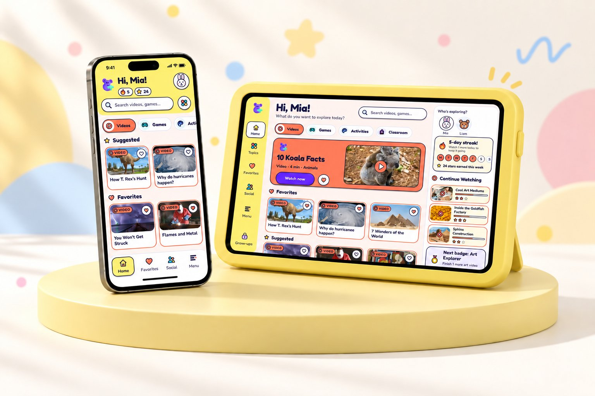
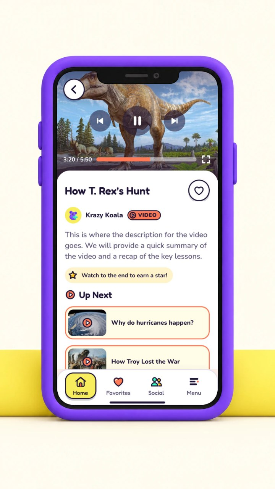
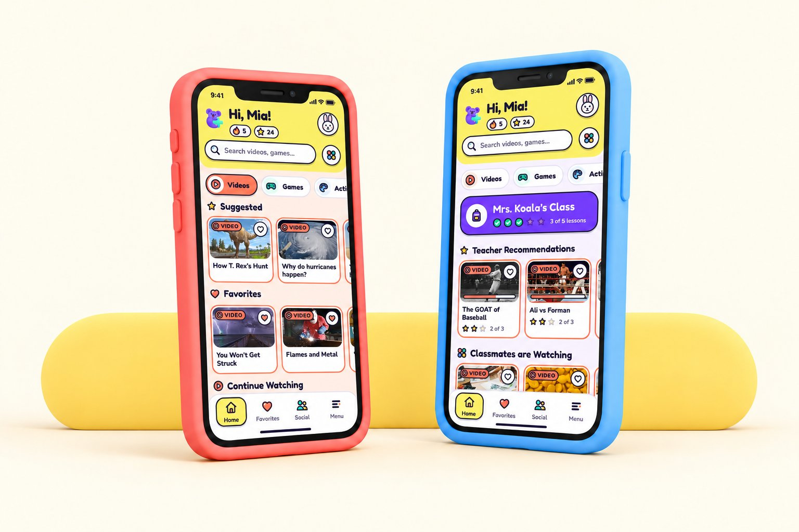
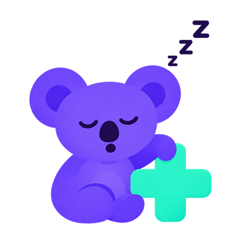
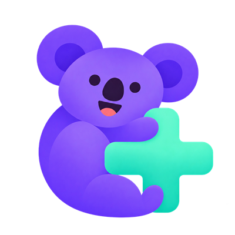
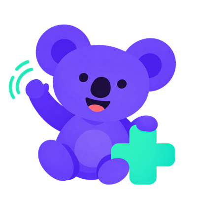
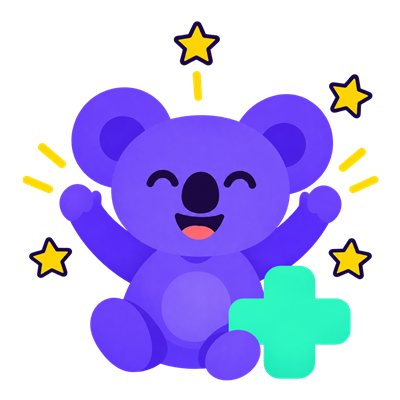
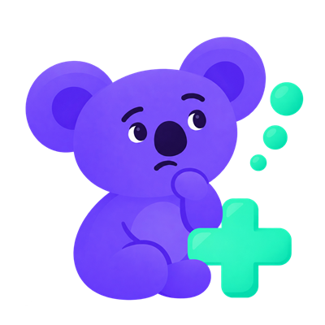
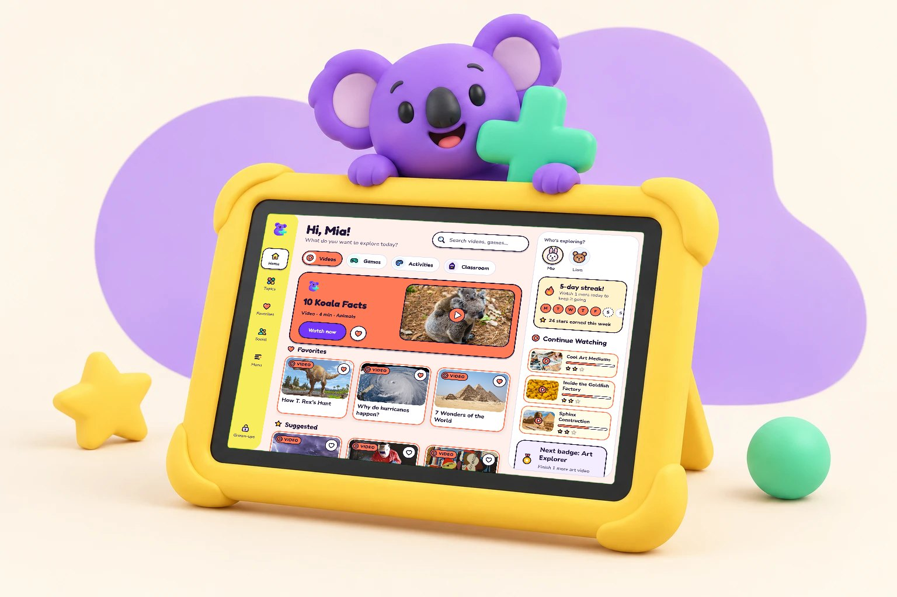

Interviews
Key Insights
- Devices are often used as a babysitter
- TV is the most used device
- Technology is essential in 2025
- Chores done in short amount of time

Student Team Project
Parents use technology to babysit their kids while doing chores and activities. Because educational content doesn't capture their children's attention, parents often feel guilty about giving their children screen time. ContentPlus is a platform with vetted educational videos, games, and activities that children want to play with. It includes key features like parental controls, a connection to your child's schoolwork, and a secure way for them to play with friends. It's the ideal solution for guilt-free screen time.
UI Design, UI Research, Visual Design



Discovery
Screen time, specifically YouTube, is a significant part of modern life. But excessive screen time comes with consequences

Research
We sent out cultural probe kits, conducted observational studies, and held interviews with parents, grandparents, and aunts to better understand children’s screen time usage and how parents use technology in their daily lives
Key Insights
Key Insights
Key Insights
Solution
How might we make children's TV interactive and educational?
An educational app that keeps kids engaged through a variety of media, including videos, games, and interactive activities
We initiated the ideation phase with rapid sketching, allowing us to quickly visualize multiple concepts and explore various directions
We tested our mid-fidelity wireframes with six users to check the navigation and main user flow
Expanding video, activity, and game options
Providing a smooth introduction for new users
Ensuring consistent and easy navigation
Offering clear and detailed options for parents
Simplifying the profile with an active status
User feedback helped us identify issues and improve the design early, establishing a strong foundation before we moved to the final visuals
Meet Koko

ClassicLogo · rails · headers
WaveGuides · welcome
CheerRewards · completions
ThinkLoading · questionsBrand
Content categories
Fredoka
Rounded display, for kid headings and buttons
Hi, Mia!
Nunito
Rounded and highly legible, for everything you read
Watch 1 more today to keep your streak.
Icons
Custom set drawn to match Koko: 2.5px ink outline, one or two cheerful fills
Final Delivery
New users choose whether they’re using ContentPlus at home or with school. School users enter a class code, while home users sign up with a parent’s email and password. Then, they select their favorite content categories, like music, games, and sports.
01Welcome
02Home or school
03Class code
04Topics
The Videos feature gives kids access to a curated library of safe, age-appropriate educational videos designed to be both fun and engaging. It was informed by our observation studies, where we noted that most videos are reviewed by AI, and by user testing feedback pointing toward expanding video, activity, and game options.
01Home
02Video
03Playing
04Favorites
The Activities feature keeps kids actively engaged while they watch. During videos, short quiz-style questions appear to check understanding and encourage participation
01Activities
02Activity
03Let’s get started
Kids can invite friends from their friend list to watch videos, play games, or complete activities together in a safe environment
01Friends
02Ready to play
03Play
The Parental Controls section lets parents control what their children can access and block any content they don’t want them to see. It was informed by our observation studies, where we noted minimal parental controls, and by user testing feedback calling for clear and detailed options for parents.
01Menu
02Kid profile
03Parents
04Blocked categories
Our exclusive ContentPlus device minimizes eye strain and runs only our app

Testing our mid-fidelity wireframes with six users helped us identify issues and improve the design early, before we moved to the final visuals. The feedback centered on five areas: expanding video, activity, and game options; a smooth introduction for new users; clear and detailed options for parents; consistent and easy navigation; and a simpler profile with an active status. That early round of testing gave us a strong foundation for the final design.